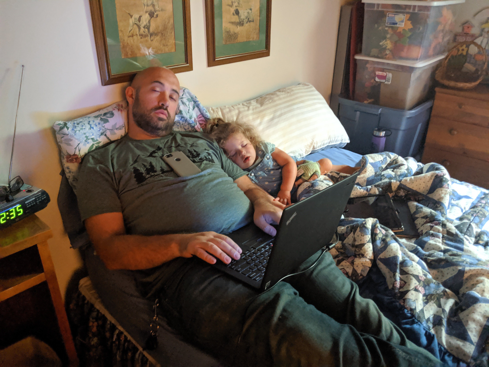
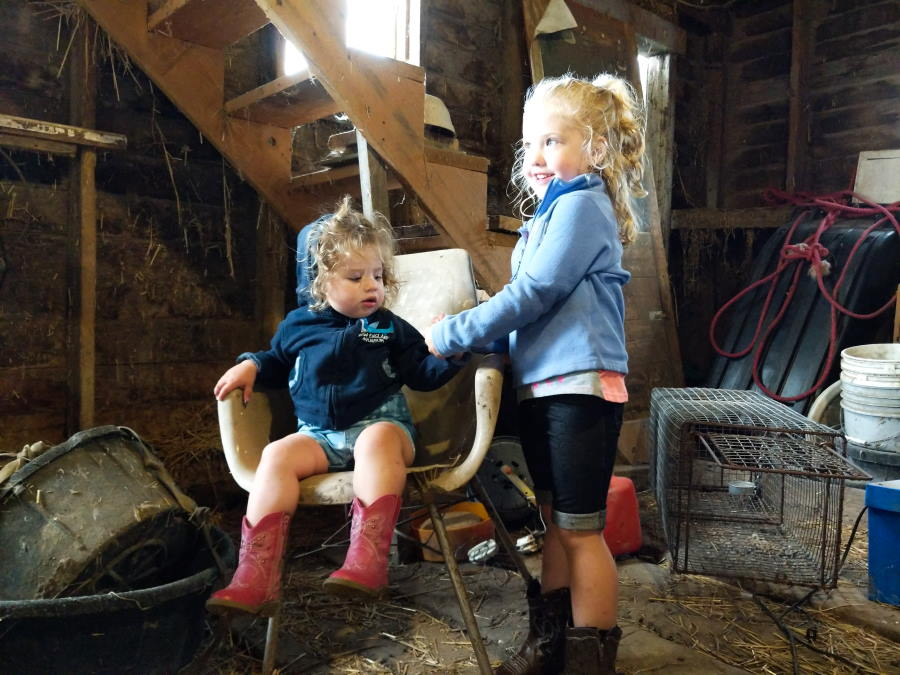
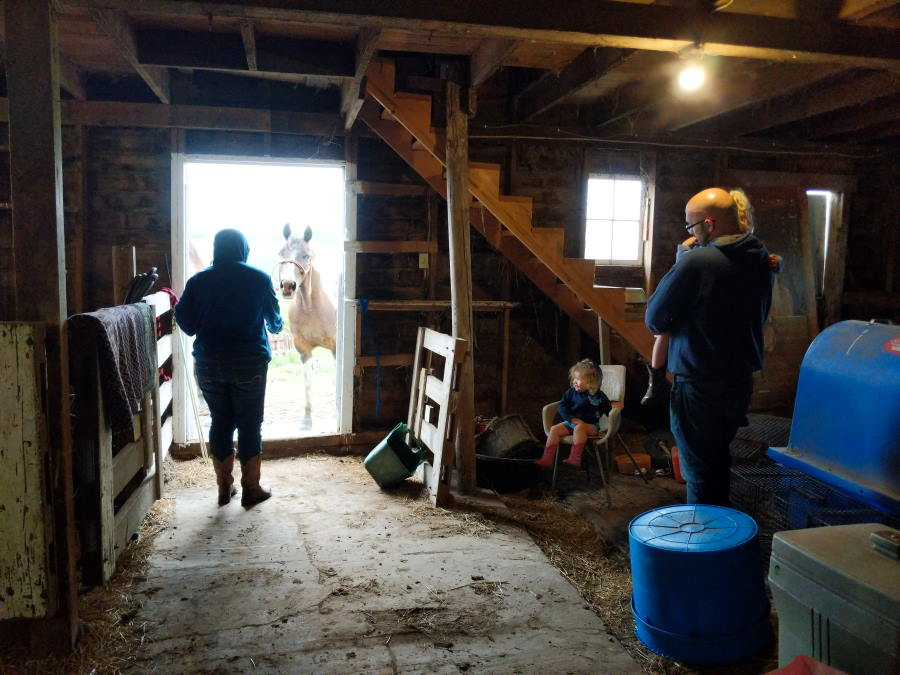
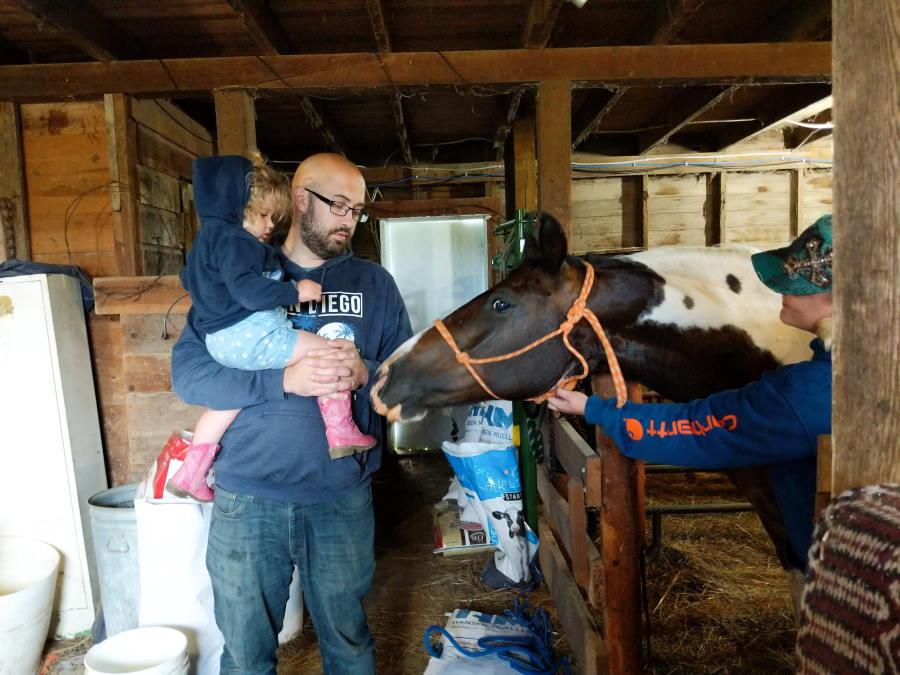

Early morning
It was rough waking up at 4am. Our boddies had grown used to both the bed. It didn't rock back and forth when you moved, and it was more comfy then the tent. But we wanted to get to Iowa this morning to see Abigail's grandaparents, aunt, cousin, and maybe the in-laws.
When we got up Bonnie and Betsy had already been up for awhile. Sounds like Betsy gets up fairly early to take care of the farm, and Bonnie woke up to make us breakfast and coffee. They really are super nice people!
Breakfast today was some home-made Breakfast burritos with green Salsa on top. Bonnie also made a pot of coffee, and made it stronger then normal. She admitted the other day that us east-coast people like strong coffee. Bonnie packed us some donuts, gold fish, and a pop-tart for the girls once they woke up.
 Very Yum!
Very Yum!
 Thea Sleeping in the bed
Jenna sound asleep on the couch
Thea Sleeping in the bed
Jenna sound asleep on the couch
Road to Iowa
We learned our lesson last time, before I left I filled my Water bottle up with hot coffee which kept me Peppy for the road. We took a bio break after 2 hours, about 1/2 to our destination. We both stocked up on Coffee and we tried some donuts from the local Casey's.
 Abigail's Coffee and the donuts we shared
Abigail's Coffee and the donuts we shared
The rest of the trip to Iowa was pretty uneventful, we saw lots of corn. And I feel like that is an understatement for how much corn there is out here. Most of this corn isn't even for human consumption! I never want to see corn again.
The rest of the Day
While Jenna was at the rodeo, I took some time to setup the Roof Top Tent inside the barn. Last time we packed it up before getting to the Farm, we had some light rain. It was a great suggestin from Abigail, once I opened it back up there was sitll a lot of moisture on the outside tent.
 Making sure the Jeep & tent would fit
Making sure the Jeep & tent would fit
 Thea helping me setup the tent
Thea helping me setup the tent
At one point when we were outside some of the goats has escaped. Thea was watching them while I hearded one of the goats back into the pen.
 Thea keeping things in order
Thea keeping things in order
After the tent was setup we went down into the basement, it was a good 10 degrees cooler and Thea needed to nap. I started working on the blog while Thea rested up against me. Abigail was editing her photos so I could later post them to the blog.
 Hard at work!Meeting the neighbors
When Jenna got back from the Rodeo, and I took a break from my hard work. We all climbed into the farm truck to go and see the cows. We only had to drive a little bit down a dirt road, and then out into the pasture so everyone piled into th eback seat.
 Buckle up while driving through the field.
Buckle up while driving through the field.
We found a small group of cows, and Betsy brought out the bag of cow treats. They were the size of a C battery, and were very dense. The girls were excited to see the cows from inside the truck, but after we climbed into the bed they weren't as excited.
 Getting Ready to feed my first cow
Getting Ready to feed my first cow
 It was a weird feeling.
It was a weird feeling.
 My hand was covered in cow drool
My hand was covered in cow drool
We tried to get Thea and Jenna to try feeding a cow but they weren't having any of it. Abigail took a turn feeding the cows though.
 Cows have very rough tongues!
Cows have very rough tongues!
Meeting the Horses
Betsy and Molly took us all out into the horse barn so we could try petting and brushing the horses. Originally we were going to try riding with Jenna, but figured brushing would be the safer option.
 Waiting for a horse to be brought inJenna was scared of them and had a hard time staying calm and I had to hold her the whole time. Because she was upset, Thea wasn't very happy either. But Thea wanted to try touching!
 Watching the horse in the door Reaching for the Horsey
Reaching for the Horsey
Pretty soon Abigail took Jenna back to the house, and it was just Thea, Molly, Betsy, and myself. Thea got a lot braver and was willing to touch the ears, the head, the nose, and even stroke his neck.
 Thea testing the waters with LakotaWe don't have any pictures of Thea being with the horse since Abigail went inside. It took some time for Thea to warm up but she enjoyed being with the horses. Pretty soon Abigail came out to tell us Dinner was almost ready.
Dinner & Bedtime
Bonnie and Betsy treated us to some farm fresh burgers, these came from one of their own cows! Man did they taste good. I may see if I can find a local farmer to see if we can get these in the Northeast!
After dinner we used their bathrub to get everyone washed up and then settled down for bed. It was nice to have a fairly normal routine before we got back on the road tomorrow. The plan was to get up at 4am, be out of the door by 5. We were all ready to be home.
 A proper bath!
A proper bath!